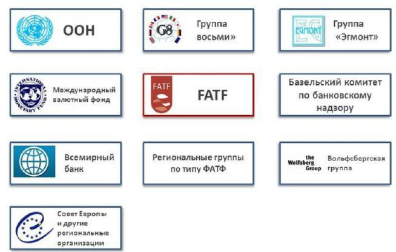

Лекция 2. Экономические и правовые основы международной системы противодействия легализации (отмывания) преступных доходов и финансирования терроризма¶
Макроэкономические последствия отмывания денег¶
Легализованные доходы от незаконных видов деятельности представляют серьезную опасность для мировой экономики поскольку эти средства обеспечивают финансирование организованной преступности в том числе терроризма.
Tiền thu được hợp pháp hóa từ các hoạt động bất hợp pháp gây ra mối nguy hiểm nghiêm trọng cho nền kinh tế toàn cầu vì các quỹ này cung cấp tài chính cho tội phạm có tổ chức, bao gồm cả khủng bố.
ВОЗМОЖНЫЕ МАКРОЭКОНОМИЧЕСКИЕ ПОСЛЕДСТВИЯ ОТМЫВАНИЯ ДЕНЕГ
колебания спроса на капитал, не соответствующие реальным изменениям
колебания курсовых разниц и процентных ставок
рост волатильности рынка ценных бумаг
ухудшение качества активов финансовых институтов
ошибки в фискальной и денежно кредитной политике государства
эффект «загрязнения» заражение легальных операций предприятий криминальной среды
Hậu quả KINH TẾ VĨ MÔ CÓ THỂ CÓ CỦA VIỆC RỬA TIỀN
Những biến động về nhu cầu vốn không tương ứng với những thay đổi thực tế
Biến động về tỷ giá hối đoái và lãi suất
Gia tăng biến động của thị trường chứng khoán
Suy giảm chất lượng tài sản của các tổ chức tài chính
sai sót trong chính sách tài chính và tiền tệ của nhà nước
Hiệu ứng “ô nhiễm”: ô nhiễm hoạt động hợp pháp của các doanh nghiệp phạm tội
Приток в экономику «грязных денег» создает возможность для роста преступности, в том числе коррупции.
Dòng “tiền bẩn” chảy vào nền kinh tế tạo cơ hội gia tăng tội phạm, bao gồm cả tham nhũng.
Основы международной системы ПОД/ФТ¶
19 декабря 1988 года Венская конвенция признала, что незаконный оборот наркотиков обеспечивает сверхприбыль и признала такие доходы преступлением т к создают глобальные угрозы экономической безопасности и используются для финансирования терроризма
1988 г. Венская конвенция (Подписана 106 государствами членами ООН)
Главный источник «грязных» денег торговля наркотиками
Обязанность вести борьбу против отмывания «грязных» денег
Банковская тайна не может служить препятствием для организации такой борьбы
Необходимость международного сотрудничества
Vào ngày 19 tháng 12 năm 1988, Công ước Vienna công nhận rằng buôn bán ma túy mang lại lợi nhuận vượt mức và công nhận số tiền thu được đó là tội phạm vì chúng tạo ra mối đe dọa toàn cầu đối với an ninh kinh tế và được sử dụng để tài trợ cho khủng bố.
Công ước Vienna 1988 (Được 106 nước thành viên Liên Hiệp Quốc ký kết)
Nguồn tiền “bẩn” chính là buôn bán ma túy
Nghĩa vụ chống rửa tiền
Bí mật ngân hàng không thể là trở ngại cho việc tổ chức một cuộc chiến như vậy
Sự cần thiết của hợp tác quốc tế
Основы международной системы ПОД/ФТ¶
Страсбургская конвенция в 1990 году, определила, что лишение преступника доходов, добытых преступным путем, является эффективным методом борьбы против опасных форм преступности.
Công ước Strasbourg năm 1990 đã xác định rằng tước đoạt tài sản do phạm tội mà có được là một phương pháp hiệu quả để đấu tranh các hình thức tội phạm nguy hiểm.
Государства, подписавшие Конвенцию, взяли на себя обязательство квалифицировать в качестве уголовных правонарушений определенные виды умышленных деяний.
Các quốc gia đã ký kết Công ước đã cam kết hình sự hóa một số loại hành vi cố ý.
Формирование единой международной системы ПОД/ФТ/ФРОМУ¶
Основные источники международного права в сфере ПОД/ФТ
Конвенции ООН;
Резолюции Совета Безопасности ООН;
Конвенции Совета Европы;
Шанхайская конвенция о борьбе с терроризмом, сепаратизмом и экстремизмом;
Договор государств участников Содружества Независимых Государств в борьбе с терроризмом;
Рекомендации ФАТФ;
Документы группы «Эгмонт»
Документы Базельского комитета по банковскому надзору;
Принципы Вольфсбергской группы.
Các nguồn luật quốc tế chính trong lĩnh vực AML/CFT
Công ước của Liên hợp quốc;
Các Nghị quyết của Hội đồng Bảo an Liên hợp quốc;
Công ước của Hội đồng Châu Âu;
Công ước Thượng Hải về chống khủng bố, chủ nghĩa ly khai và chủ nghĩa cực đoan;
Hiệp ước của các quốc gia thành viên Cộng đồng các quốc gia độc lập trong cuộc chiến chống khủng bố;
Khuyến nghị của FATF;
Tài liệu của Tập đoàn Egmont
Các văn bản của Ủy ban Basel về Giám sát ngân hàng;
Nguyên tắc của Tập đoàn Wolfsberg.
Правовые основы международной системы ПОД/ФТ¶
Международные, универсальные и региональные конвенции
Резолюции Совета Безопасности ООН
Резолюция СБ ООН от 13 августа 1998 г 1189
Резолюция СБ ООН от 15 октября 1999 г 1267
Резолюция СБ ООН от 28 сентября 2001 г 1373
Резолюция СБ ООН от 20 декабря 2002 г 1452
и др
Các công ước quốc tế, toàn cầu và khu vực
Nghị quyết của Hội đồng Bảo an Liên hợp quốc
Nghị quyết 1189 của Hội đồng Bảo an Liên Hiệp Quốc ngày 13 tháng 8 năm 1998
Nghị quyết của Hội đồng Bảo an Liên hợp quốc ngày 15 tháng 10 năm 1999 1267
Nghị quyết 1373 của Hội đồng Bảo an Liên hợp quốc ngày 28 tháng 9 năm 2001
Nghị quyết của Hội đồng Bảo an Liên hợp quốc ngày 20 tháng 12 năm 2002 1452
và những người khác
Рекомендации профильных международных структур
40 Рекомендаций ФАТФ 2012 г
основные принципы страхования Международной ассоциации страховых надзоров (ИАИС) от 1 октября 2011 года
цели и принципы регулирования рынков ценных бумаг ИОСКО 1998 г
и др
Khuyến nghị từ các tổ chức quốc tế chuyên ngành
40 Khuyến nghị của FATF 2012
nguyên tắc cơ bản về bảo hiểm của Hiệp hội Giám sát Bảo hiểm Quốc tế (IAIS) ngày 1 tháng 10 năm 2011
Mục tiêu và nguyên tắc điều tiết thị trường chứng khoán IOSCO 1998
và những người khác
Формирование единой международной системы ПОД/ФТ/ФРОМУ¶
Financial Action Task Force on Money Laundering ( ФАТФ) Международная группа по разработке финансовых мер по борьбе с отмыванием денег
Lực lượng đặc nhiệm hành động tài chính về rửa tiền (FATF) Nhóm quốc tế phát triển các biện pháp tài chính để chống rửa tiền
Акцент стратегии ФАТФ сделан на
разработке международных стандартов в борьбе с отмыванием преступных доходов
развитии надежных и эффективных региональных органов по типу ФАТФ
расширении сотрудничества с соответствующими международными организациями
Sự nhấn mạnh của chiến lược FATF là
xây dựng các tiêu chuẩn quốc tế trong cuộc chiến chống rửa tiền
phát triển các cơ quan khu vực đáng tin cậy và hiệu quả tương tự như FATF
Mở rộng hợp tác với các tổ chức quốc tế có liên quan
ФАТФ поддерживает контакты с:
ООН
Советом Европы
Всемирным Банком
Европейским банком реконструкции и развития
Международным валютным фондом
Интерполом
Европолом
Советом по таможенному сотрудничеству
международным профессиональным объединением подразделений финансовой разведки (ПФР) - Группой «Эгмонт», объединяющей ведущие подразделения финансовой разведки мира
другими международными организациями
FATF duy trì liên lạc với:
LHQ
Hội đồng Châu Âu
Ngân hàng Thế giới
Ngân hàng Tái thiết và Phát triển Châu Âu
Quỹ tiền tệ quốc tế
Interpol
Europol
Hội đồng hợp tác hải quan
hiệp hội chuyên nghiệp quốc tế của các đơn vị tình báo tài chính (FIU) - Tập đoàn Egmont, hợp nhất các đơn vị tình báo tài chính hàng đầu thế giới
các tổ chức quốc tế khác
Взаимодействие ФАТФ и России¶
1988 г. Венская конвенция ООН.
1989 г. Создание ФАТФ.
2000 г. Россия включена в «чёрный» список ФАТФ. (не соответствует 11 из 25 критериев, по которым страну можно отнести к категории ничего не предпринимающих в борьбе с легализацией преступных доходов)
2002 г. Россия исключена из «чёрного» списка ФАТФ.
2003 г. Россия стала участником ФАТФ.
2013 2014 г. Россия председательствует в ФАТФ.
2019 г. Россия в ТОП 5 стран по эффективности национальной системы ПОД/ФТ в мире.
Пленарное заседание ФАТФ (3 раза в год)
Руководящая группа (Президент, заместитель, государства по региональному принципу)
Рабочие группы ФАТФ
РГ по рискам, трендам и методам (RTMG)
РГ по разработке политики ПОД/ФТ (PDG)
РГ по оценкам и выполнению (ECG)
РГ по вопросам международного сотрудничества (ICRG)
РГ по координации глобальной сети ФАТФ (GNSG)
Секретариат ФАТФ
Công ước Vienna của Liên hợp quốc năm 1988.
1989 Thành lập FATF.
2000 Nga bị đưa vào danh sách đen của FATF. (không đáp ứng 11 trong 25 tiêu chí mà một quốc gia có thể được phân loại là không làm gì trong cuộc chiến chống rửa tiền)
2002 Nga bị loại khỏi danh sách đen của FATF.
2003 Nga trở thành thành viên của FATF.
2013 2014 Nga làm chủ tịch FATF.
2019 Nga nằm trong TOP 5 quốc gia về hiệu quả của hệ thống AML/CFT quốc gia trên thế giới.
Cuộc họp toàn thể FATF (3 lần một năm)
Nhóm chỉ đạo (Chủ tịch, Phó, nêu theo khu vực)
Nhóm công tác FATF
Nhóm làm việc về Rủi ro, Xu hướng và Thực tiễn (RTMG)
Nhóm Phát triển Chính sách AML/CFT (PDG)
Nhóm Đánh giá và Thực hiện (ECG)
Nhóm Hợp tác Quốc tế (ICRG)
Nhóm công tác điều phối mạng lưới toàn cầu FATF (GNSG)
Ban Thư ký FATF
Региональные группы по типу ФАТФ¶
ФАТФ в форме ассоциированного членства поддерживает партнерские отношения с региональными группами по типу ФАТФ, объединяющими страны, готовые к выполнению Рекомендаций ФАТФ и взаимной оценке своих национальных систем ПОД/ФТ
Комитет экспертов Совета Европы по оценке мер противодействия легализации (отмывания) преступных доходов и финансированию терроризма МАНИВЭЛ MONEYVAL
Азиатско Тихоокеанская группа борьбы с отмыванием денег АТГ APG
Группа разработки финансовых мер борьбы с отмыванием денег государств Ближнего Востока и Северной Африки МЕНАФАТФ MENAFATF
Группа разработки финансовых мер борьбы с отмыванием денег государств Латинской Америки ГАФИЛАТ GAFILAT
Межправительственная группа по борьбе с отмыванием денег в Западной Африке ГИАБА GIABA
Группа по борьбе с отмыванием денег государств Восточной и Южной Африки ЕСААМЛГ ESAAMLG
Карибская группа разработки финансовых мер борьбы с отмыванием денег СИФАТФ CFATF
Группа разработки финансовых мер борьбы с отмыванием денег в Центральной Африке ГАБАК GABАС а также
Евразийская группа по противодействию легализации (отмывания) преступных доходов и финансированию терроризма ЕАГ
FATF, dưới hình thức thành viên liên kết, duy trì quan hệ đối tác với các nhóm khu vực kiểu FATF nhằm đoàn kết các quốc gia sẵn sàng thực hiện Khuyến nghị của FATF và đánh giá lẫn nhau về hệ thống AML/CFT quốc gia của họ
Ủy ban Chuyên gia của Hội đồng Châu Âu về việc đánh giá các biện pháp chống hợp pháp hóa (rửa tiền) tiền thu được từ tội phạm và tài trợ cho khủng bố MONEYVAL
Nhóm chống rửa tiền Châu Á Thái Bình Dương APG APG
Lực lượng đặc nhiệm hành động tài chính Trung Đông và Bắc Phi MENAFATF MENAFATF
Lực lượng đặc nhiệm hành động tài chính Mỹ Latinh GAFILAT GAFILAT
Hội đồng liên chính phủ về rửa tiền ở Tây Phi GIABA GIABA
Nhóm Chống rửa tiền Đông và Nam Phi ESAAMLG ESAAMLG
Lực lượng đặc nhiệm hành động tài chính vùng Caribe CIFATF CFATF
Lực lượng đặc nhiệm hành động tài chính cho Trung Phi GABAK GABAC và
Nhóm Á-Âu về chống hợp pháp hóa (rửa tiền) tiền thu được từ tội phạm và tài trợ cho khủng bố EAG
Организации и специализированные органы¶
Международные организации входящие в структуру ПОД/ФТ

Совет руководителей подразделений финансовой разведки государств участников Содружества Независимых Государств¶
Hội đồng người đứng đầu các đơn vị tình báo tài chính của các quốc gia thành viên thuộc Cộng đồng các quốc gia độc lập
Создан в соответствии с Соглашением об образовании Совета руководителей подразделений финансовой разведки государств участников Содружества Независимых Государств, принятым 5 декабря 2012 года в г. Ашхабаде.
Được thành lập theo Thỏa thuận về việc thành lập Hội đồng Người đứng đầu các Đơn vị Tình báo Tài chính của các quốc gia thành viên thuộc Cộng đồng các Quốc gia Độc lập, được thông qua vào ngày 5 tháng 12 năm 2012 tại Ashgabat.
Соглашение подписали главы семи государств участников СНГ: Республики Армения, Республики Беларусь, Республики Казахстан, Кыргызской Республики, Российской Федерации, Республики Таджикистан и Украины.
Thỏa thuận được ký bởi người đứng đầu bảy quốc gia thành viên CIS: Cộng hòa Armenia, Cộng hòa Belarus, Cộng hòa Kazakhstan, Cộng hòa Kyrgyzstan, Liên bang Nga, Cộng hòa Tajikistan và Ukraine.
Основные задачи:
организация взаимодействия ПФР и иных заинтересованных органов государств участников СНГ,
определение приоритетных направлений сотрудничества и принятие совместных эффективных мер,
содействие выработке единых подходов в целях сближения и гармонизации национального законодательства государств,
разработка предложений о совершенствовании правовой базы сотрудничества
оказание содействия подразделениям финансовой
обмен информацией между подразделениями финансовой
принятие мер, способствующих подготовке кадров для антиотмывочной
обеспечение реализации принятых в рамках СНГ
Nhiệm vụ chính:
tổ chức tương tác giữa Quỹ hưu trí và các cơ quan quan tâm khác của các quốc gia tham gia CIS,
xác định các lĩnh vực hợp tác ưu tiên và thực hiện các biện pháp chung có hiệu quả,
hỗ trợ phát triển các cách tiếp cận chung nhằm mang lại sự gần gũi và hài hòa hơn giữa các quốc gia pháp luật nhà nước,
Xây dựng các đề xuất nhằm hoàn thiện khuôn khổ pháp lý cho hợp tác
Hỗ trợ các bộ phận tài chính
Trao đổi thông tin giữa các bộ phận tài chính
thực hiện các biện pháp tạo điều kiện thuận lợi cho việc đào tạo nhân sự chống rửa tiền
đảm bảo việc thực hiện được thông qua trong CIS
Группы подразделений финансовой разведки «Эгмонт»¶
В июле 1995 г в Брюсселе представители 24 государств и ряда международных организаций приняли решение о создании неформального объединения национальных подразделений финансовых разведок (ПРФ).
Vào tháng 7 năm 1995, tại Brussels, đại diện của 24 quốc gia và một số tổ chức quốc tế đã quyết định thành lập một hiệp hội không chính thức gồm các đơn vị tình báo tài chính quốc gia (FIU).
Группа была названа «Эгмонт» по названию замка «Эгмонт Аренберг » Где проходило её 1-е заседание.
Nhóm được đặt tên là “Egmont” theo tên của lâu đài Egmont Arenberg, nơi diễn ra cuộc họp đầu tiên.
Росфинмониторинг осуществляет функции официального представителя региона «Евразия» в составе руководящего органа Комитета «Эгмонт»
Rosfinmonitoring hoạt động với tư cách là đại diện chính thức của khu vực Á-Âu với tư cách là một phần của cơ quan quản lý của Ủy ban Egmont
С июня 2002 года Росфинмониторинг является членом Группы подразделений финансовой разведки «Эгмонт»
Kể từ tháng 6 năm 2002, Rosfinmonitoring đã là thành viên của Nhóm các đơn vị tình báo tài chính Egmont
Группа «Эгмонт» предоставляет своим членам возможность информационного обмена по защищённым каналам связи Членами группы являются 165 юрисдикций.
Nhóm Egmont cung cấp cho các thành viên của mình cơ hội trao đổi thông tin thông qua các kênh liên lạc an toàn. Các thành viên của nhóm là 165 khu vực pháp lý.
В 2014 году Группа усилила свое присутствие на глобальном уровне путем создания 8 Региональных групп, в основном, совпадающих с составом участников РГТФ Функции фициального представителя региона «Евразия» в составе руководящего органа Комитета «Эгмонт», осуществляет Росфинмониторинг.
Năm 2014, Tập đoàn đã tăng cường sự hiện diện của mình ở cấp độ toàn cầu bằng cách thành lập 8 Nhóm khu vực, chủ yếu phù hợp với thành phần của những người tham gia RGTF. Ủy ban Egmont được thực hiện bởi Rosfinmonitoring.
Требования к Подразделениям финансовых разведок для вступления в Группу «Эгмонт»¶
являться самостоятельным ПФР
осуществлять реальную деятельность
иметь полномочия на взаимодействия с иностранными ПФР
нормативная и техническая база государства должна быть на соответствующем уровне
là một Quỹ hưu trí độc lập
Thực hiện các hoạt động thực tế
có quyền tương tác với các FIU nước ngoài
cơ sở pháp lý và kỹ thuật của nhà nước phải ở mức phù hợp
РГТФ ФАТФ¶
Требования
Членами группы должны быть не менее 5 стран
Члены группы должны признавать и соблюдать 40 Рекомендаций ФАТФ
Должна проводить взаимные оценки на соответствие Рекомендациям
Должна проводить анализ тенденций и типологий в сфере ОД/ФТ
Должна иметь Председателя (Президента) и Секретариат
Должна проводить регулярные встречи
Должна поддерживать регулярные контакты с ФАТФ
Yêu cầu
Thành viên của nhóm phải có ít nhất 5 quốc gia
Các thành viên nhóm phải công nhận và tuân thủ 40 Khuyến nghị của FATF
Phải tiến hành đánh giá lẫn nhau về việc tuân thủ các Khuyến nghị
Phải phân tích xu hướng và loại hình trong lĩnh vực ML/TF
Phải có Chủ tịch (Chủ tịch) và Ban Thư ký
Phải tổ chức họp định kỳ
Phải duy trì liên lạc thường xuyên với FATF
Полномочия
Допуск делегаций РГТФ на все мероприятия ФАТФ
Получение содействия ФАТФ
Участие во взаимных оценках ФАТФ
Quyền
Chấp nhận các đoàn RGTF tham dự tất cả các sự kiện của FATF
Nhận hỗ trợ của FATF
Tham gia đánh giá lẫn nhau của FATF
Евразийская группа по противодействию легализации (отмыванию) преступных доходов и финансированию терроризма¶
Создана 6 октября 2004 года по инициативе Российской Федерации, поддержанной ФАТФ, Международным валютным фондом, Всемирным банком и рядом государств.
Được thành lập vào ngày 6 tháng 10 năm 2004 theo sáng kiến của Liên bang Nga, được hỗ trợ bởi FATF, Quỹ Tiền tệ Quốc tế, Ngân hàng Thế giới và một số quốc gia.
Членами ЕАГ являются 9 государств Евразийского региона: Беларусь, Индия, Казахстан, Китай, Киргизия, Россия, Таджикистан, Туркменистан, Узбекистан.
Thành viên EAG là 9 quốc gia thuộc khu vực Á-Âu: Belarus, Ấn Độ, Kazakhstan, Trung Quốc, Kyrgyzstan, Nga, Tajikistan, Turkmenistan, Uzbekistan.
Наблюдатели - 16 государств: Армения, Афганистан, Италия, Литва, Молдова, Монголия, Польша, Сербия, США, Турция, Украина, Франция, Черногория, Республика Корея, Иран, Япония, а также 19 международных организаций
Quan sát viên - 16 quốc gia: Armenia, Afghanistan, Ý, Lithuania, Moldova, Mông Cổ, Ba Lan, Serbia, Mỹ, Thổ Nhĩ Kỳ, Ukraine, Pháp, Montenegro, Hàn Quốc, Iran, Nhật Bản, cũng như 19 tổ chức quốc tế
В рамках ЕАГ функционируют три рабочие группы:
по взаимным оценкам и правовым вопросам,
по типологиям и противодействию терроризму и преступности,
по техническому содействию.
Có ba nhóm làm việc trong EAG:
về đánh giá lẫn nhau và các vấn đề pháp lý,
về các loại hình và chống khủng bố và tội phạm,
để được hỗ trợ kỹ thuật.
Еще одним направлением работы на пространстве ЕАГ является проведение оценок национальных антиотмывочных систем на соответствие международным стандартам ФАТФ.
Một lĩnh vực công việc khác trong không gian EAG là đánh giá các hệ thống chống rửa tiền quốc gia về việc tuân thủ các tiêu chuẩn FATF quốc tế.
Евразийская группа по противодействию легализации преступных доходов и финансированию терроризма¶
Евразийская группа по противодействию легализации преступных доходов и финансированию терроризма (ЕАГ) создана 6 октября 2004 года по инициативе РФ, поддержанной Группой разработки финансовых мер борьбы с отмыванием денег (ФАТФ) Международным валютным фондом, Всемирным банком и рядом государств
Nhóm Á-Âu về chống rửa tiền và tài trợ khủng bố (EAG) được thành lập vào ngày 6 tháng 10 năm 2004 theo sáng kiến của Liên bang Nga, được hỗ trợ bởi Lực lượng đặc nhiệm hành động tài chính (FATF) của Quỹ Tiền tệ Quốc tế, Ngân hàng Thế giới và một số tiểu bang
В июне 2011 г в Москве подписано Соглашение о ЕАГ, установившее статус Евразийской группы как межправительственной организации, основанной на принципах равного участия государств членов в её деятельности Участниками Соглашения стали Беларусь, КНР, Киргизия, Россия, Таджикистан, Туркменистан и Узбекистан Евразийская группа по противодействию легализации преступных доходов и финансированию терроризма
Vào tháng 6 năm 2011, Thỏa thuận EAG đã được ký kết tại Moscow, xác lập vị thế của Nhóm Á-Âu là một tổ chức liên chính phủ dựa trên nguyên tắc tham gia bình đẳng của các quốc gia thành viên vào các hoạt động của mình. , Tajikistan, Turkmenistan và Uzbekistan Nhóm Á-Âu về chống hợp pháp hóa tiền thu được từ tội phạm và tài trợ khủng bố
В июле 2011 г к Соглашению присоединился Казахстан, а в ноябре того же года Индия
Vào tháng 7 năm 2011, Kazakhstan đã tham gia Hiệp định và vào tháng 11 cùng năm, Ấn Độ
ЕАГ является региональной группой по типу ФАТФ, в соответствии с решением Пленарного заседания которой в июне 2010 г она получила статус ассоциированного члена ФАТФ
EAG là một nhóm khu vực tương tự như FATF, theo quyết định của cuộc họp toàn thể vào tháng 6 năm 2010, nó đã nhận được tư cách là thành viên liên kết của FATF
Основной целью Евразийской группы является обеспечение эффективного взаимодействия и сотрудничества на региональном уровне, а также интеграции государств членов Евразийской группы в международную систему противодействия легализации (отмывания) преступных доходов и финансированию терроризма в соответствии со стандартами ФАТФ
Пленарное заседание ЕАГ (2 раза в год)
Руководящая группа (Председатель, заместитель, государства по региональному принципу)
Рабочие группы ЕАГ
РГ по взаимным оценкам и правовым вопросам
РГ по типологиям и противодействию терроризму и преступности
РГ по техническому содействию
Секретариат ЕАГ
Mục tiêu chính của Nhóm Á-Âu là đảm bảo sự tương tác và hợp tác hiệu quả ở cấp khu vực, cũng như sự hội nhập của các quốc gia thành viên của Nhóm Á-Âu vào hệ thống quốc tế chống rửa tiền và tài trợ khủng bố theo tiêu chuẩn FATF.
Phiên họp toàn thể của EAG (2 lần một năm)
Nhóm chỉ đạo (Chủ tịch, Phó, nêu theo khu vực)
Nhóm công tác EAG
WG về đánh giá lẫn nhau và các vấn đề pháp lý
WG về các loại hình và chống khủng bố và tội phạm
WG về hỗ trợ kỹ thuật
Ban Thư ký EAG